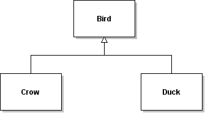

The simplified UML diagram above shows the relationships among
Java classes Bird, Crow, and Duck.
Suppose Bird has a fly(Location place) method, but we want Crows to
makeNoise() just before they take off and then behave like other
Birds. Assuming Crows have a makeNoise() method, we should
Define a fly method in Crow that just consists of makeNoise() and super.fly(place)
public void fly(Location place) {
this.makeNoise();
super.fly(place);
}
- Define a fly method in Crow by copying the fly code from Bird then adding in makeNoise() at the start, i.e.
public void fly(Location place) {
this.makeNoise();
// [paste the body of Bird's fly method here]
}/tt>
- Define a fly method in Crow that just consists of makeNoise(), i.e.
public void fly(Location place) {
this.makeNoise();
}
- Define a fly method in Crow that just consists of makeNoise() and this.fly(place), i.e.
public void fly(Location place) {
this.makeNoise();
this.fly(place);
}
- Define a fly method in Crow that just consists of makeNoise() and Bird.fly(place); i.e.
public void fly(Location place) {
this.makeNoise();
Bird.fly(place);
}
There are no hints for this question